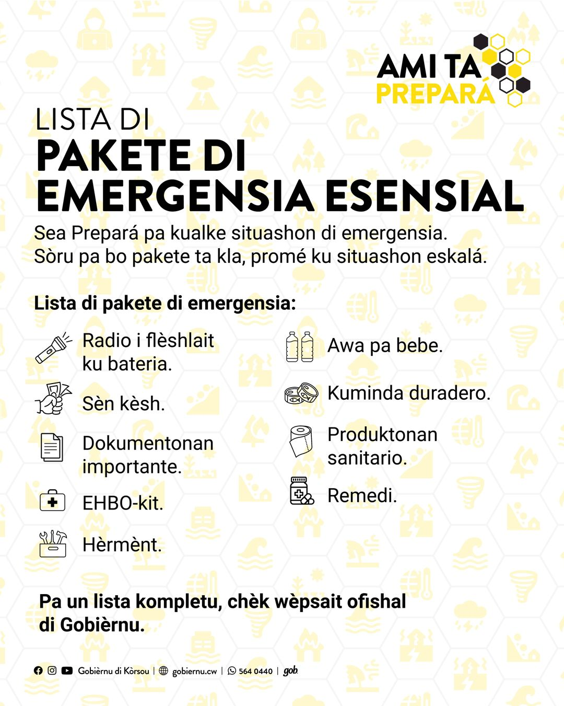

HOME
- Homepage AMI TA PREPARÁ
- Dikon prepará?
- Pakete di emergensia (pa tur kos)
- Anunsionan Importante
- Alerta i Komunikashon
- Videos
Informashon ofisial di Gobièrnu di Kòrsou pa preparashon i krísis
AMI TA PREPARÁ
Bon biní riba amitaprepara.cw, Gobièrnu su página ofisial dediká na konsientisashon riba diferente riesgo i krísis ku por afektá nos bida diario i tambe kon pa prepará pa nan.
Den kaso di kualke riesgo eminente, situashon di krísis òf kalamidat e alerta lo ta visibel akinan.
Mira anunsionan importanteHome
Gobièrnu di Kòrsou a inventarisá 35 riesgo ku por afektá nos komunidat. Riesgonan ku por tin impakto direkto riba bo bida i di bo sernan kerí. "Ami Ta Prepará" ta sirbi komo un guia pa abo i bo famia sa kon pa prepará i kiko mester tene kuenta kuné durante kualke situashon di riesgo òf krísis.
Ta rekomendabel pa abo komo siudadano di Kòrsou ta prepará pa e riesgonan aki pa na momentu ku un di nan sosodé, bo por yuda bo mes mientras ku bo ta duna espasio na servisionan di promé asistensia pa brinda asistensia na esnan ku tin mester di dje urgentemente.
riesgo identifiká pa Kòrsou
dia ku kada persona i famia mester por sòru pa nan mes
kategoria den Profil di Riesgo 2023-2028
Mapa di sitio fase 1B
PREPARÁ
Preparashon i protekshon kontra riesgo i krísis ta kuminsá ku abo mes.
Gobièrnu di Kòrsou a identifiká 35 riesgo ku por impaktá nos bida diario. Mira e profil di riesgo aki.
Den kaso di un krísis, Gobièrnu di Kòrsou tin un struktura figo di eskalashon. Bou di guia di Komandante Supremo "Opperbevelhebber" (Minister di Asuntunan General), Koordinadó Nashonal di Krísis, i ekspertonan.
Den situashonnan di kalamidat, servisionan di promé asistensia lo duna prioridat na e gruponan vulnerabel (hende grandi, mucha i personanan ku desabilidat) i esnan afektá. Por sosodé tambe ku tin retraso pa yega den tur área pa motibu di opstákulo òf situashonnan demasiado peligroso.
Ta importante pa den e situashon aki bo por ta prepará i por kuida bo mes i bo sernan kerí pa por lo ménos tres (3) dia mientras ku ta warda yudansa òf instrukshon di outoridatnan kompetente. Den e momentunan aki un bon prepashon ta importante.
Pakete di emergensia (general)
Klek aki pa un lista di produktonan básiko nesesario den un situashon di krísis. Tene kuenta ku e lista aki ta indiká e mínimo ku tin mester pa un (1) persona pa dia. Amplia e lista na bo propio nesesidat.
Un pakete di emergensia ta pa yuda abo i bo famia durante di un kalamidat. E pakete di emergensia ta konsistí produktonan ku semper mester tin den kas. Sòru pa bo pakete ta na un kaminda fásil pa yega na dje den kas i kontrolá esaki kada seis luna.
Por agregá semper mas produkto ku ta pas ku bo situashon personal.
Habri lista kompletu (PDF)
Kon pa prepará
Un pakete di emergensia ta pa yuda abo i bo famia durante di un kalamidat. Sòru pa bo pakete ta na un kaminda fásil pa yega na dje den kas i kontrolá esaki kada seis luna.
Papia ku bo famia òf sernan kerí den kas tokante kiko mester hasi durante di un situashon di krísis òf kalamidat.
Palabrá ku bisiñanan òf otro hendenan den bario kon pa yuda otro na momentu ku ta "safe" pa hasi esaki.
Checklists i tepnan balioso
Pronto nos lo kompartí.
Prent un mapa di bo besindario for di riba "Google Maps" i warda esaki na un lugá kaminda ku e no por muha òf den bo pakete di emergensia.
Esaki ta importane pa den kaso ku servisionan di internèt i di "GPS" no ta traha bo por tin un bista konkreto di un ruta alternativo pa yega na un shèlter òf buska yudansa den serkanisa.
Kòrda riba bo bestianan di kas.
RIESGONAN
Kada 5 aña Kòrsou ta hasi un análisis pa identifiká riesgonan ku por afektá bida diario. Esaki resultá den un "Profíl di Riesgo": un lista ku e riesgonan di mas relevante pa Kòrsou.
Ta krea e "Profil di Riesgo" basá riba dos fuente: un método (internashonal) di análisis hasí pa ekspertonan i un sondeo bou di siudadanonan di Kòrsou, di loke nan ta sinti ku por ta e riesgonan di mas grandi. Un riesgo por ta algu ku bo por mira òf sinti, pero e por ta tambe un sintimentu kolektivo di sosiedat tokante un situashon aktual.
Despues ta presentá e lista di riesgo na Konseho di Minister pa aprobashon. Asina tin aprobashon, e "Profil di Riesgo" ta bira ofisial i ta bira alabes un plan di enfoke di mas aña pa informá i prepará pueblo kuné.
Preparashon ta nesesario pa instanshanan operativo di krísis i pa nos komo komunidat di Kòrsou.
E "Profíl di Riesgo 2023-2028" ta konta ku un total di 35 riesgo repartí den 7 kategoria.
Documento di Profil di Riesgo 2023-2028 ta wordu prepará.
Riesgonan di fenómenonan di naturalesa.
Riesgonan ku por presentá den ambiente urbanisá.
Riesgo relashoná ku teknologia, industria i supstansia peligroso.
Interupshon òf aksidente ku por afektá servisio esensial.
Malesa, venenamentu, pandemia i otro riesgo pa salud públiko.
Desórden, akomodashon di hopi hende, drama sosial i menasa.
Tenshon geopolítiko den region i otro partinan di mundu.
Tur 35 riesgo
Kòrsou su 35 riesgonan identifiká ta repartí den 7 katerogia ku, ta varia di fenómenonan di naturalesa, riesgonan teknológiko te na eventonan geopolítiko.
Pa kada riesgo identifiká tin otro maneho i preparashon nesesario. Gobièrnu di Kòrsou huntu ku su parternan a desaroyá plannan spesífiko pa antisipá potensial impaktonan i definí e akshonnan ku tim di krísis lo mester tuma.
Riba e página aki bo ta haña informashon tokante kada un riesgo, kiko abo por hasi i kiko Gobièrnu ta hasi.
Efektonan ku por presentá pa motibu di tenshon geopolítiko den region i otro partinan di mundu, por ehèmpel guera i aktonan di terorismo internashonal.
Struktura di krísis
Den e fase aki ta vigilá un situashon i ta konsidera esaki un riesgo potensial. Instansianan di Gobièrnu enkargá ku e riesgo spesífiko aki ta vigilá i prepará pa un eventual krísis.
E fase aki ta kuminsá na momentu ku Minister di Asuntunan General ta dekretá un krísis. Den kaso di un krísis, e struktura normal di gobernashon ta paralisá temporalmente. E Minister di Asuntunan General i alabes Promé Minister ta kombertí den Komandante Supremo (Opperbevelhebber) temporal. Ku esaki e ta tuma mando i maneho di henter pais ofer i for di e momentu ei ta e úniko responsabel pa tur desishon di pais.
Banda di e "Opperbevelhebber" tin un Kordinadó Nashonal di Krísis, ku ta enkargá pa guia e proseso di tuma desishon. Dependé di e krísis tin un "Crisis-staff" i/òf e tin di CRBo (Crisis- en Rampenbestrijding organisatie) pa yuda den konseho, maneho i akshon pa ku e krísis òf kalamidat.
KOMPANIANAN
Kompania i organisashonnan, tambe mester ta prepará pa riesgo òf krísis. Tin diferente riesgo ku por afektá bo organisashon òf negoshi. Esakinan por para trabou i servisio, ku konsekuensia i impaktonan indeseá pa bo organisashon.
Komo organisashon òf negoshi chikí i grandi, bo por hasi diferente esfuerso pa konsientisá miembronan di bo organishon i trahadónan tokante e importansia di un bon preparashon. Un persona bon informá i prepará ku su famia na pas i kuidá, por duna mas den un situashon di krísis.
Kampañanan interno di informashon regular, ta yuda krea konsientisashon tantu pa bo koleganan, empleadonan, i pa bo organisashon mes.
Plan di kontinuidat
Si kontinuidat di bo operashon òf servisio ta esensial den un situashon di krísis of kalamidat, un bon preparashon (adelantá) pa kualke riesgo òf krísis ta di sumo importansia.
Pensa riba un kapasidat mínimo di personal nesesario pa operashon di bo servisionan por sigui.
Analisá i prepará pa interupshon den servisionan i ki impakto esaki tin pa abo i bo klientenan.
Pensa un plan di kontinuidat di servisio temporal.
Plania i komuniká ku bo personal, den kaso di kalamidat, kon pa start bèk operashon di bo servisionan.
Tene kuenta ku esaki ta nesesario solamente si kontinuidat di bo operashon òf servisio ta importante pa komunidat. Seguridat i bienestar di bo abo i bo empleadonan ta na promé lugá.
Checklist
Traha un lista di chekeo pa na momento ku un riesgo presentá bo organisashon òf negoshi ta bon prepará:
MEDIA
Mas informashon
Den kaso di un riesgo òf krisis, Gobièrnu di Kòrsou tin un tim di maneho di krísis i kalamidat ku ta eskalá i atendé e krísis. E tim aki su enkargo ta protekshon di pais i komunidat den su totalidat. Dependé e situashon, lo duna asistensia promé na e grupo den mas nesesidat i di riesgo mas haltu.
P'esei, ta importante pa kada persona i famia, por sòru pa nan mes pa por lo ménos tres (3) dia den kaso di un krísis ku impakto grandi pa komunidat. Esaki ta krea espasio pa outoridat kompetente por duna instrukshon i yudansa konforme nesesidat.
Komo siudadano di Kòrsou, ta rekomendabel pa kada persona prepará riba e riesgonan ku por tin impakto riba bo bida i di bo sernan kerí. Ta rekomendabel pa prepará pa kualke eventualidat durante henter aña. Preparashon ta enserá ku kada persona - ku ta den estado pa hasi esaki - mester por sòru pa nan mes durante di e situashon aki te na momentu ku situashon normalisá òf por risibí yudansa si ta nesesario.
Gobièrnu ta koordiná preparashon, komunikashon i asistensia den kolaborashon ku servisionan i partnernan relevante.